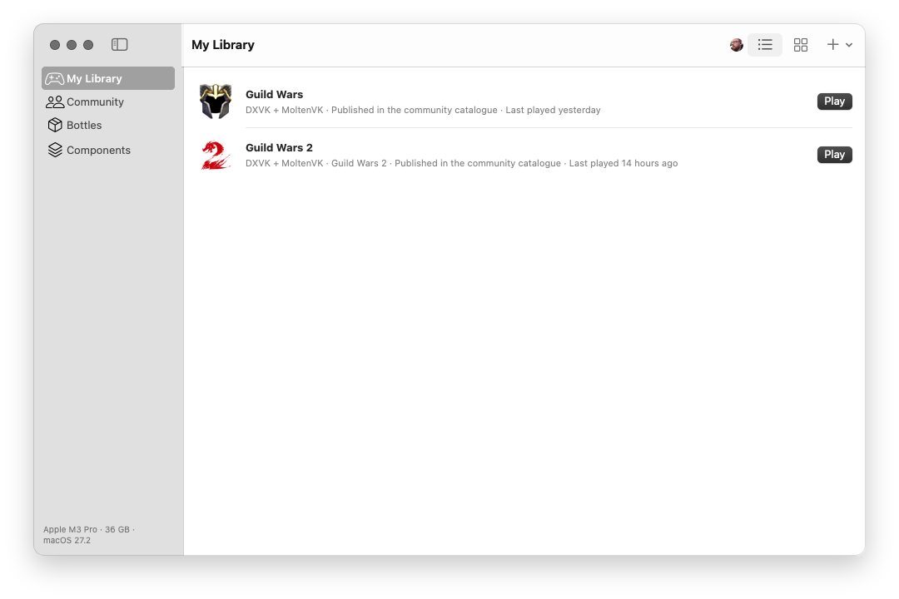
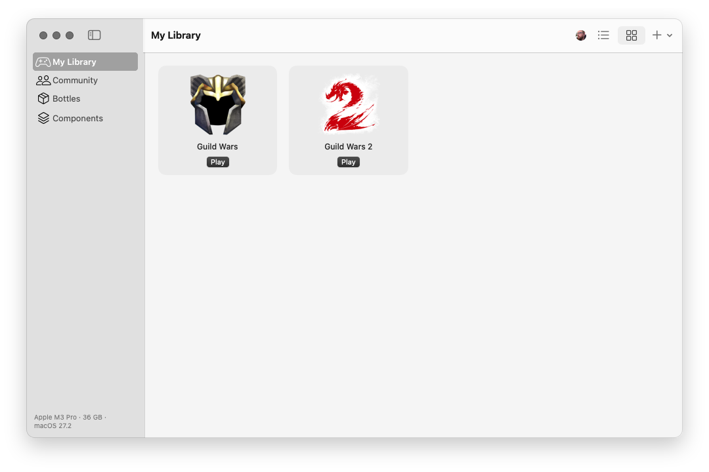
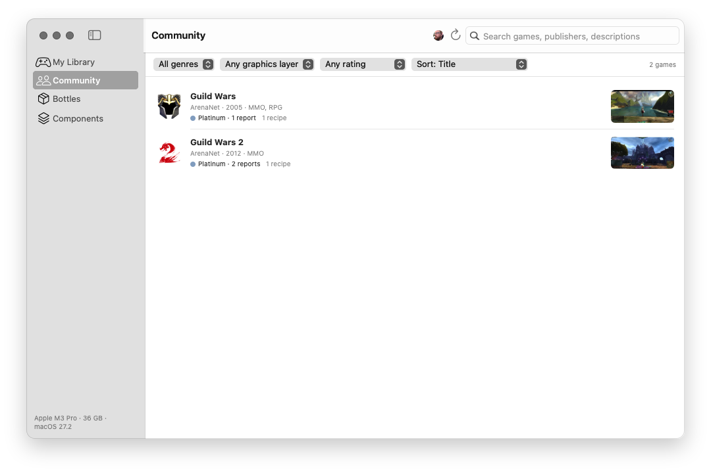
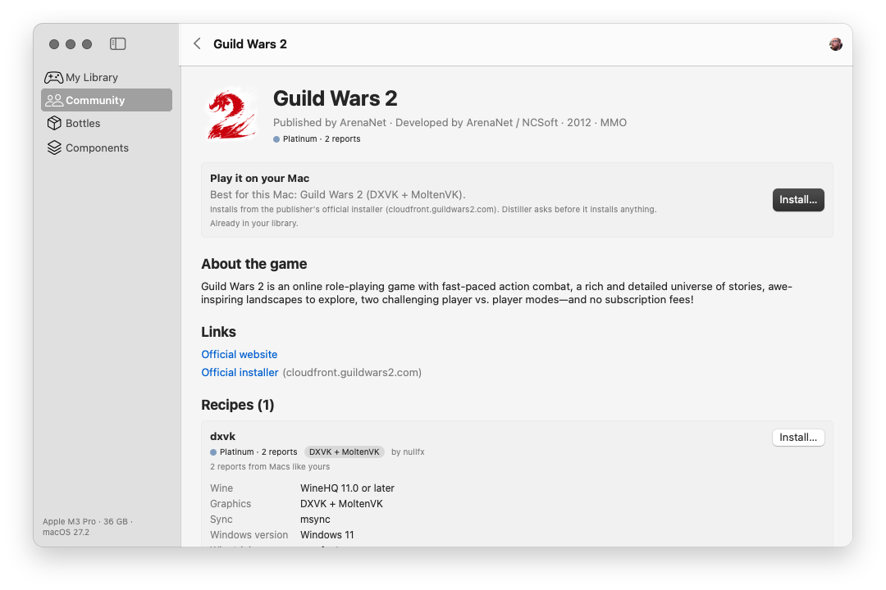
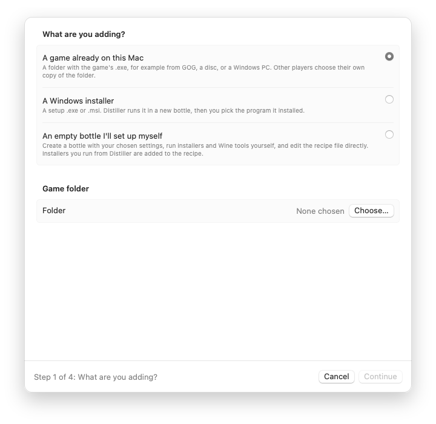
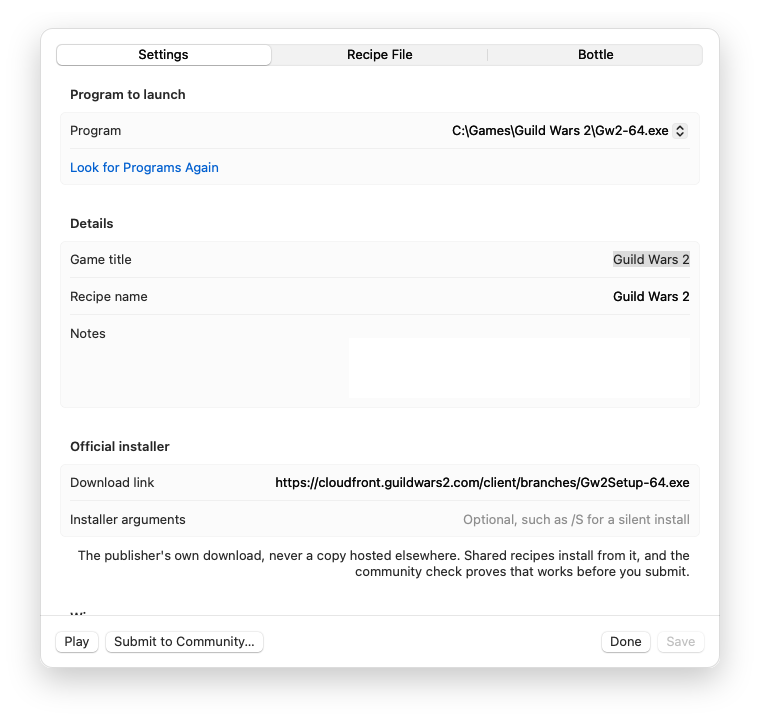
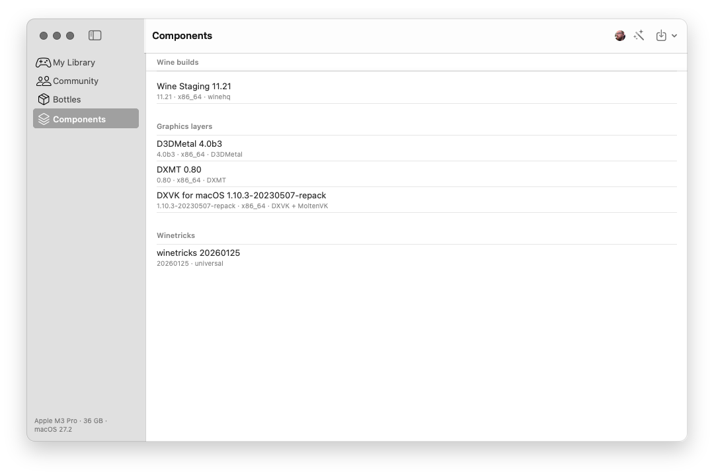
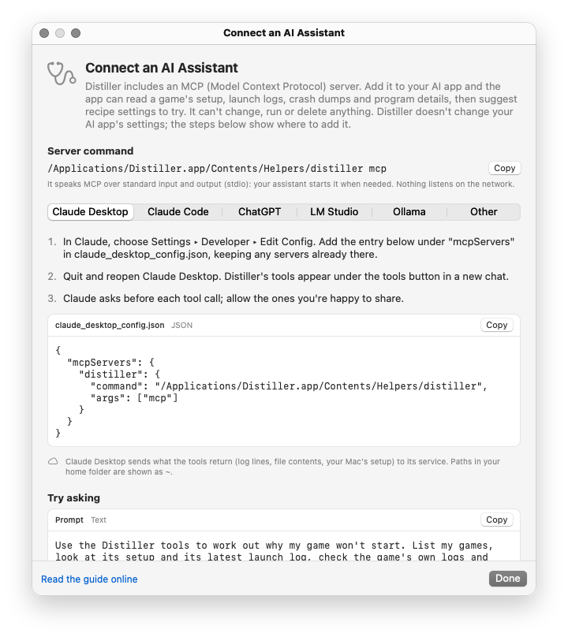

About Distiller
Distiller is a Mac app for playing Windows games on Apple silicon. It sets each game up with Wine from a recipe: a shareable description of exactly what that game needs, proven by other players on Macs like yours. Here's a tour of the app.
My Library
Every game you've installed, ready to play. Each one lives in its own bottle (a separate Wine setup, cloned in an instant), so one game's settings never trip up another.
Each row shows the graphics layer the game runs on, whether its recipe is published in the community catalogue, and when you last played. Switch between a list and a grid of icons, add a game from a recipe file, or create a new recipe with ⌘N.


Community
The community catalogue, inside the app: games with recipes other players have proven, rated from Platinum to Borked by how they ran on real Macs.
Search by title, publisher or description, and filter by genre, graphics layer and rating, or sort by rating or the most recent reports, just like the games page on this site. Browsing never needs an account.

A game's page
Click a game to see everything before you install it: who makes it, what it's about, and the recipe that works best on a Mac like yours, with the rating it earned from Macs like yours.
Each recipe lists its settings in plain terms (Wine version, graphics layer, Windows version, winetricks components, environment and launch options), with the recipe file itself, a table of how it runs on different Macs, and every report behind its rating. Install… shows exactly what will happen and asks first; games always install from their publisher's official installer.

Creating a recipe
Have a game that isn't in the catalogue yet? Create Recipe… starts from what you have: a game already on your Mac (a GOG download, a disc, a copy from a Windows PC), a Windows installer, or an empty bottle you set up yourself.
Distiller reads the game's program before it ever runs and suggests a starting point from the libraries it uses: the graphics layer, the Windows version and the Windows components it's likely to need.

The recipe workshop
Every game you add opens in the workshop, where you get it running: choose the program to launch, adjust the settings, edit the recipe file directly or in your own editor, run installers and Wine's tools in the game's bottle, and press Play to test.
When it works, the community check proves it does for everyone: Distiller installs the game from its official installer in a fresh bottle and you play it. Then Submit to Community… opens a pull request with your recipe and a few screenshots, for a maintainer to review.

Components
The building blocks games run on: Wine builds, graphics layers that translate DirectX to Metal (D3DMetal, DXMT, and DXVK with MoltenVK), and winetricks for Windows components.
The Setup Assistant installs what's needed on first run, each download checked against its publisher's checksum. D3DMetal comes from your own Game Porting Toolkit download from Apple, which Distiller imports for you. Components are versioned, so a recipe can ask for exactly what it was tested with.

AI troubleshooting assistant
When a game won't start, an AI assistant can help work out why. Turn it on in Settings, and Distiller's built-in MCP server lets the AI app you already use (Claude, ChatGPT, or a local model in LM Studio or Ollama) read a game's setup, launch logs and crash dumps, then suggest settings to try.
The connection guide gives the exact settings for each app, ready to copy. The assistant can only read, only within a game's own folders, and it's off until you turn it on. The docs walk through building a recipe from scratch with it.

Try it
Distiller is free and open source, for Apple silicon Macs with macOS 14 or later.